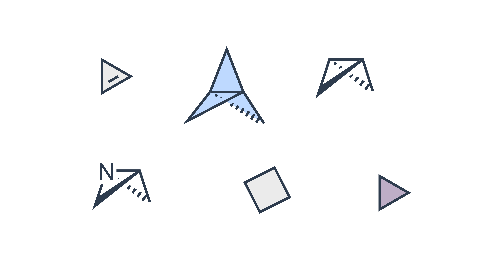

Ring-Strain-Driven Reaction Discovery
Ring strain drives reactivity by releasing strain energy, enabling access to valuable scaffolds. We aim to exploit strain-release strategies to design novel reactions that expand the synthetic toolbox for constructing complex molecules.
Representative Publications
2025
Strain-Enabled Radical-Polar Crossover Annulation to Access Spiro-, Fused-, and Enantioenriched-Aza/Oxa-Bicyclo[3.1.1]heptanes
Angew. Chem. Int. Ed.Ghorai†, Sahana†, Hari
2024
Strain-Enabled Radical Spirocyclization Cascades: Rapid Access to Spirocyclobutyl Lactones and Lactams
Chem. Sci.Das, Pedada, Singha, Hari

Click to enlarge